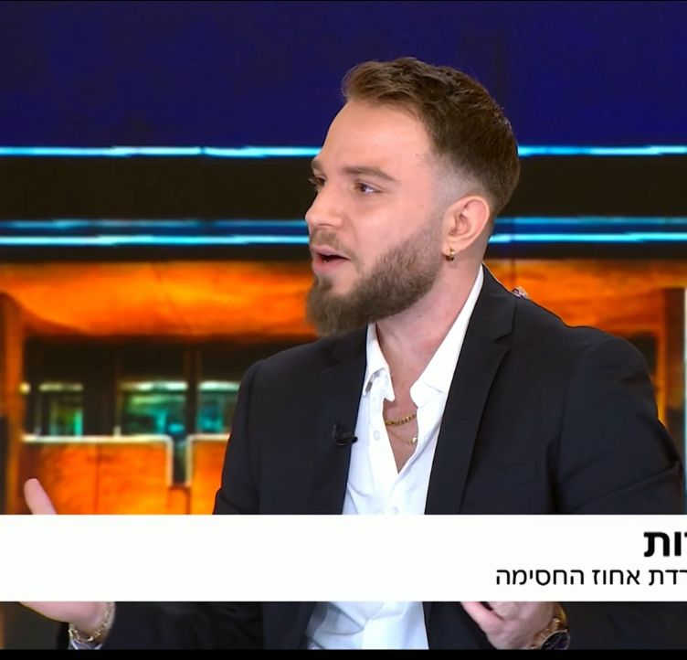

ייעוץ אסטרטגי לפוליטיקאים, נבחרי ציבור ואנשים שנמצאים תחת עין תקשורתית קבועה — ורוצים לשלוט במסר, בתדמית ובתגובה.
בזירה הציבורית, אמירה אחת חלשה, תגובה מאוחרת או ניסוח לא מדויק יכולים להפוך לכותרת, משבר או נזק תדמיתי. אני עובד על החשיבה, על החידוד ועל מה שנאמר בפועל — לפני שזה יוצא החוצה.

בזירה הציבורית, לא צריך קריסה גדולה כדי להיפגע. מספיק ניסוח חלש, מסר מבולבל, תגובה מאוחרת או פוסט שלא מחזיק את הקו.
התקשורת לא מחכה, הרשת לא סולחת, והיריבים תמיד מוכנים למסגר את הסיפור לפניך.
מי שלא מגדיר את המסר שלו בזמן — נגרר אחרי המסר של אחרים.
אני לא מנהל עמודים. אני לא רודף אחרי טרנדים. אני לא מוכר “נוכחות”.
אני עובד על ההחלטה התקשורתית עצמה: מה לומר, איך לומר, מתי להגיב, ואיפה לא ליפול.
העבודה היא על חדות, שליטה, אמינות והשפעה — בדיוק איפה שהדברים באמת נקבעים.
פוסטים, תגובות, הודעות ועמדות — לפני שהן יוצאות החוצה.
מסרים חדים, קו עקבי, שפה ברורה והחזקה של נרטיב.
שאלות צפויות, שאלות קשות, תשובות מדויקות והתנהלות נכונה בלחץ.
מה אומרים, איך זה נתפס, איפה הסיכון ואיך נכון להגיב.
מהירות, שיקול דעת וניסוח נכון כשאי אפשר להרשות לעצמך לטעות.
מעבר לניסיון המקצועי, אני פעיל גם בזירה הדיגיטלית עצמה — לא כדי “לעשות סושיאל”, אלא כדי להבין איך שיח ציבורי נבנה, זז ומשפיע בזמן אמת.
כרגע שמתי לך שלושה כרטיסים חזקים שמובילים לפרופיל הטיקטוק שלך. אחר כך נוכל להחליף כל אחד מהם ללינק של סרטון ספציפי שלך, עם תמונה ייעודית וטקסט מותאם.
קריאה של מהלכים, שיח ציבורי והבנת מה באמת קורה מאחורי המסר.
צפה בפרופיל →איך משפט אחד הופך לסיפור, ואיך מונעים מהזירה לברוח למקום הלא נכון.
צפה בפרופיל →לא רק מה אומרים — אלא איך נראים, איך נשמעים, ואיך מחזיקים עמדה.
לאינסטגרם →